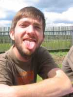
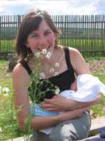
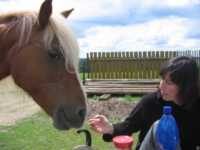

Novinky
Kolekce Spirit Horse 2008
Připravili jsme pro Vás kolekci oblečení Spirit Horse. Kolekce obsahuje různé modely, které jsou určeny zejména pro aktivní pobyt v přírodě, pro večerní posezení u táboráků či pro nenáročný a pohodový program. Některé modely obsahují doplňky pro pobyt v deštivém či chladném počasí.
Kolekce je k nahlédnutí ZDE.
Intenzivní víkendová příprava
Abyste měli představu, jak vypadá příprava prázdninovky Spirit Horse, přinášíme několik ilustrativních záběrů z proběhlého víkendu.
| Maximální vypětí | Šéfová hulí |
| Zastíraný nesouhlas | mlok |
Maminka s mládětem
| Dětem nůž do ruky nepatří! |
| Leňa pečuje o mláďátko | Šéfová zhulená |
| Zjevný nesouhlas  | Leňa opět pečuje o mláďátko  |
| Romantika u teepee | Romantika u ohně |
| Kuchařská sekce | Rodičovské porozumění  |
| Pracovní zátiší s kytkou | Bude ovčí mlíko? |
| Vyčerpaní byli nejen lidé | Balíme to... |